⛩ 神社寺廟散策 · 熊本縣・人吉市上青井町 · 2025-04
青井阿蘇神社
青井阿蘇神社あおいあそじんじゃ
- 祭神
- 建磐龍命・阿蘇津媛命・國造速甕玉神
- 社格
- 舊縣社・別表神社
雨一路沒停，樓門的茅葺屋簷把雨聲收成一片，落在紫幕上的家紋濕透了色。 這座神社的名字裡有「井」，境內外都是水——蓮池、球磨川、山田川， 四百年前選址的人把這些水都算進了風水裡，沒算到的是， 水有一天會漲到只剩鳥居的橫樑露在外面。
社殿群黑漆塗底、赤漆點綴，急勾配的茅葺屋頂像一座座小山， 四百年沒有挪過位置。緊挨著它們的，是一棟去年才落成的新建築， 屋頂同樣模仿茅草的粗糙質感，柱子卻是另一座神社倒下的巨木。 新舊之間隔著的，是一場沒有人能預先設計進風水裡的水患。
五棟同時造營之認定
社傳記載，大同元年（806）九月九日，阿蘇神社神主尾方權之助大神惟基依神託， 將阿蘇神社的分靈自阿蘇迎至球磨郡青井鄉奉祀，是為創建之始。 這個日子比後來統治此地七百年的相良氏入國，還早了將近四百年。 翌年惟基就任初代大宮司並改姓青井，此後青井家世襲此職五十八代、約一千一百年。
天喜年間（十一世紀中葉）一度再興，建久九年（1198）相良長賴以領主身分下向此地， 將青井阿蘇神社奉為氏神，寄進神領兩百十六石。此後歷代相良家多次修造社殿， 延德三年（1491）相良為續造營即是其中一例，近世通稱「青井大明神」。 這個名字一直用到明治元年（1868）才改稱青井神社，四年後再改成今天的社名。
近世以前，這裡走的是兩部神道（りょうぶしんとう，真言密教系統的神佛習合）： 建磐龍命以十一面觀音、阿蘇津媛命以不動明王、國造速甕玉神以毘沙門天為各自的本地佛， 神體供的是佛像。直到寬文五年（1665）改行唯一神道，佛的那一層才被剝去。 今天境內展示的板繪御正體與銅製懸佛，是那一層留下來的實物。
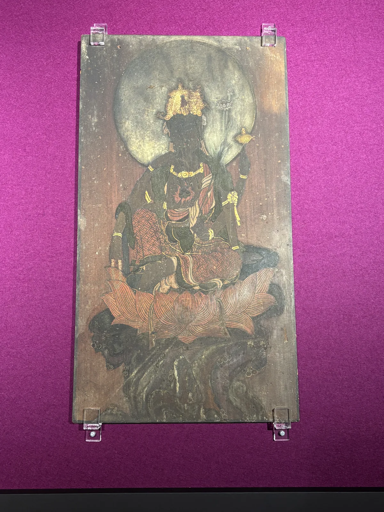
然而今日所見的五棟社殿，並非數百年間層層累積的產物， 而是慶長十五年至十八年（1610〜1613）間，由初代人吉藩主相良長每與家老相良清兵衛 發起的一次造營工程——本殿、廊、幣殿三棟先於慶長十五年竣工， 拜殿隔年完成，樓門則在慶長十八年最後落成。
平成二十年（2008）六月九日獲指定為國寶時，文化廳列出的評價有三點： 中世球磨地方發展出的獨自意匠被繼承下來，同時機敏地吸收了桃山期的華麗手法； 完成度高到成為近世球磨地方社寺造營的範本；雕刻技法與特異的拜殿形式， 影響廣及南九州一帶。一併指定的還有造營時的棟札一枚，與記載歷次改築的銘札五枚。
五棟建物早在昭和八年（1933）即依國寶保存法列為（舊）國寶， 戰後改依文化財保護法列為重要文化財，直到平成二十年才重新指定為國寶。 這是茅葺社寺建造物的全國首例，也是熊本縣現存文化財的第一座國寶； 神社建築的國寶指定，則是睽違四十七年之後的第一件。
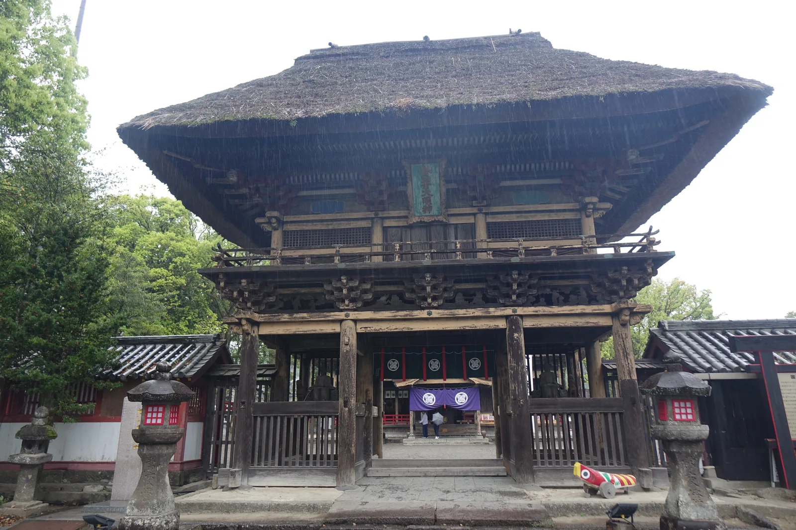
不過，名字裡的「阿蘇」並不代表制度上的隸屬。相良氏與阿蘇氏在南北朝內亂期 與戰國時代多半處於對立，神社方面也表明，並沒有留下與阿蘇神社或阿蘇大宮司家 之間宗教上密切交流的資料。祀的是阿蘇三神，走的卻是人吉球磨自己的一條路。
立地非屬偶然
決定這座神社位置的，是一套具體的方位計算。境內解說牌記載， 選址時東有球磨川與山田川、南有蓮池、西有大路、北有村山—— 四方各有依憑，被認為是與平城京相仿的吉地，而不是隨意擇一片空地。
境內另有一個更早的座標。社殿東側立著一株被稱為「神楠」的大楠， 是人吉市指定的天然記念物，據載為郡市內最大的一株， 相傳正是神靈最初鎮座的位置。社殿是後來才擺上去的， 這株樹待在這裡的時間，比任何一棟建物都長。
球磨川同時是這片沖積平原的塑造者，也是它反覆受創的原因。 神社正對著的這條河，日本三急流之一，性情並不溫馴—— 灌溉了周邊良田，卻也在數百年間一次次漫過堤岸，逼近社殿。
相良氏入國後，這裡的地理位置又多了一層政治意義。 神社不只是信仰場所，還一度是家臣團議事、神裁的場所—— 『八代日記』記載永祿元年（1558）球磨眾曾「於青井籠居」行神裁之事， 可見它在相良氏統治結構裡，兼具信仰核心與統御裝置的雙重角色。
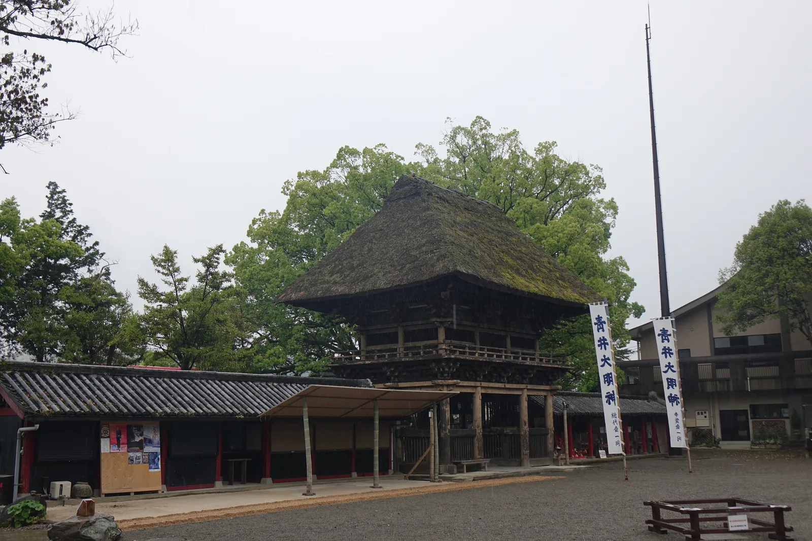
參道形制及其空間效果
樓門高達十二公尺，是進入社域前最先撞入視野的建築——三間一戶八脚門， 禪宗樣揉合桃山樣式，寄棟造茅葺，急勾配的屋頂從遠處看像一座隆起的山丘。 軒下黑漆塗底，組物與角材面取部分則以赤漆點綴，這種黑赤併用的技法， 延續著中世以來人吉球磨地方獨自的建築意匠。
樓門上層四隅隅木下，嵌著八個成對的神面雕刻，喜怒哀樂各異其趣， 是別處看不到的「人吉樣式」。初層組物間的琵琶板上刻著二十四孝的故事， 初層天井則繪著一對雌雄龍——相傳牠們每夜會從天井溜出， 結伴到樓門前的蓮池飲水。
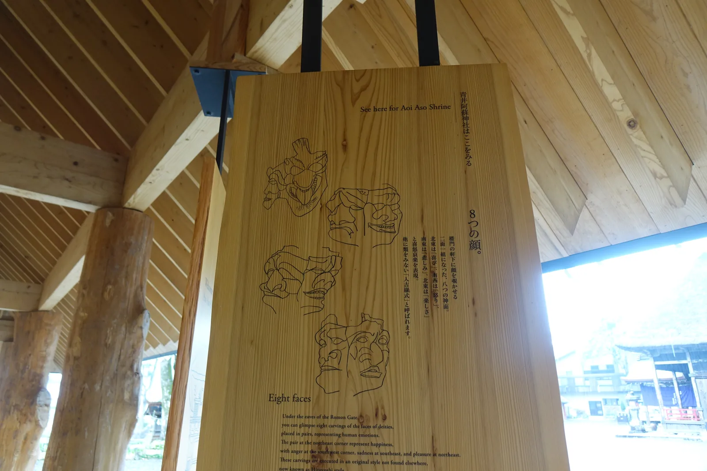
另一塊解說木牌把這組建築的性格寫成一句話：「絢爛です。素朴です。」 安土桃山文化留下的華麗，與人吉樣式代表的素樸，在同一組社殿上並置， 牌上把這種並置稱為「対の思想」——成對的思想。牌上並記， 此後四百年間社殿共經過十四次改築，那五枚列入國寶的銘札記的正是這些工事。
穿過樓門，連接本殿與幣殿的廊最先引人注目的，是兩側柱子持送上的龍雕： 一對阿吽相對，面對著看，右邊那條捲著劍、左邊那條捲著梵鐘， 據載這種形式影響了南九州近世社寺建築的走向。
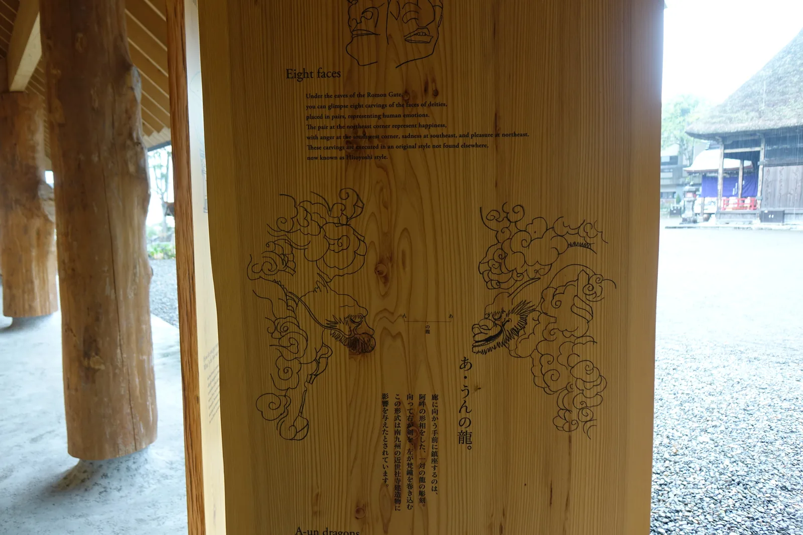
幣殿內外裝飾華麗，雕刻圖樣不受柱間侷限、連貫而下，鍍金的飾金具 用當時最先進的工法完成。上部塗著青、綠、赤三色的「格狹間」原本是安置佛像 與廚子的須彌壇基壇樣式，取意於佛教聖地須彌山，被搬到建物上部是這一帶獨有的作法。 本殿是三間社流造銅板葺，側背面的棧做成交叉的X形，也是球磨地方常見的細節。
神佛習合那一層，還在最裡面的門扇上留了記號：本殿御扉釘著真言密教法具 「輪寶」造型的金具，背面的金箔地上畫著社紋「並び鷹の羽」， 御扉兩側的蔀戶做成龜甲文樣，各部位都留有曾經畫過花瓣的痕跡。 一扇門上同時放著密教的法具與武家的家紋，這是它四百年前的正常狀態。
最特別的其實是拜殿。一棟建物的內部被隔成拜殿、神樂殿、神供所三個房間， 神樂殿裡做著這一帶獨有的舞台裝飾「ヤツジメ」，以天體為比擬； 拜殿旁再配置神供所而形成的L字狀平面，後來成為球磨地方社寺造營的規範。 文化廳指定理由裡說的「特異的拜殿形式」，指的就是這個。
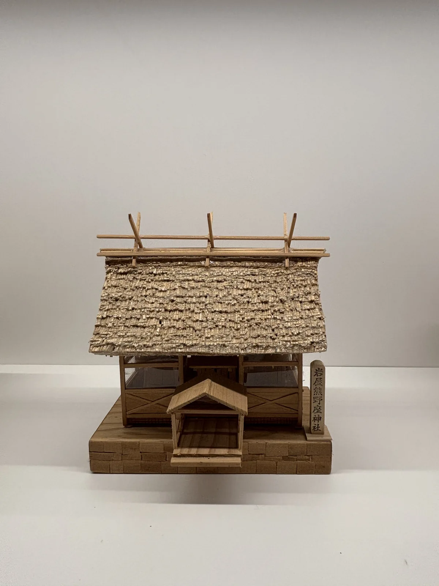
也有一處刻意沒有完成。本殿側的幣殿外壁至今只打了下繪的墨線， 既未施雕刻也未上色，四百年來維持著未完成的狀態。 一般認為，那是出於「完成了就只剩朽壞」這個觀點而故意留下的空白—— 一組被評為完成度極高的建築，自己在最看不見的那一面留了個缺口。
緊鄰社殿群的，是建築師隈研吾設計的「青井の杜國寶紀念館」， 社務所、展示室與榻榻米大廣間合為一體。木製百葉刻意做出茅葺屋頂 粗糙的節奏感，用來與四百年前的社殿對話；撐起大屋頂的柱子， 用的是宮崎縣狹野神社倒下的一株樹齡四百年杉木——與國寶社殿幾乎同齡。
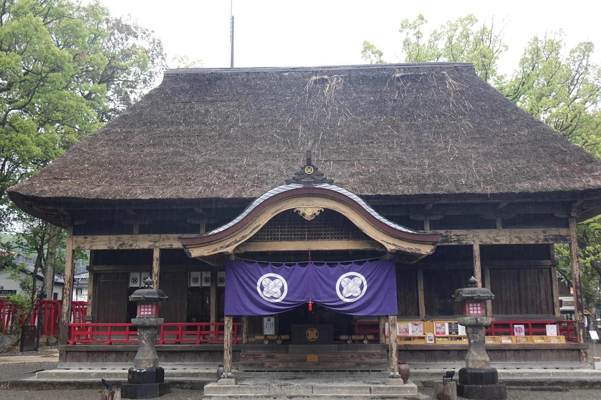
水患之後的重建
球磨川的水位，這座神社記了很久。國土交通省整理的災害履歷裡寫著， 境內留有寬文九年（1669）洪水的痕跡；而令和二年（2020）那場洪水的浸水深， 據推定與寬文九年那一次同等程度。中間隔了三百五十一年。
令和二年七月豪雨襲擊球磨川流域那天，是7月4日。 人吉市區24小時雨量達410毫米，是昭和四十年（1965）紀錄的兩倍半， 球磨川最高水位較那一年再高出兩公尺以上。神社前的一之鳥居只剩橫樑 露在濁流之上，國登錄有形文化財禊橋的朱漆欄杆整段被沖毀。
國寶拜殿床上浸水，蓮池裡的蓮花與被沖進來的車輛混在一起。 神社前的一根電柱上，掛著記錄歷次水位的標示牌，寫著「別忘記， 球磨川的另一張臉」——那是這條河對這座城市的長期提醒， 這一次只是把提醒兌現得比誰都徹底。
國寶紀念館的動工日期恰好撞上這場豪雨。隈研吾後來寫道， 洪水沖毀了禊橋欄杆，社殿也淹到地板以上，一度以為整個計畫要從零開始； 多虧宮司福川氏與地方居民展現出的重建熱情，工程幾乎照原計畫完成。
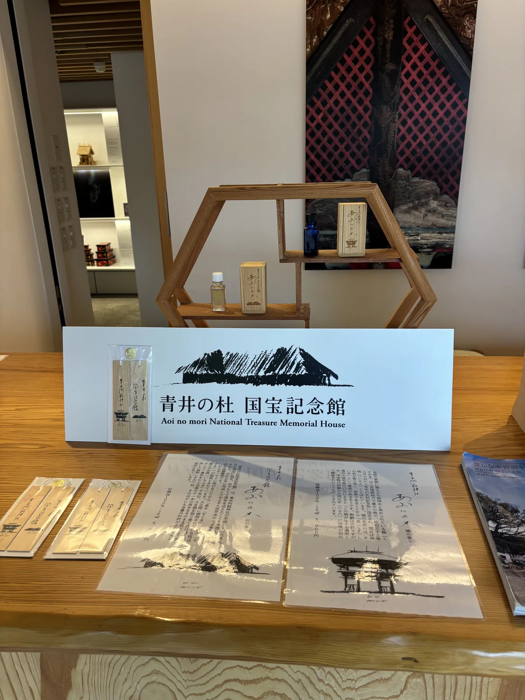
紀念館於令和五年（2023）十一月落成，是「令和御大典暨國寶指定十週年紀念事業」， 也是這場水患後最早完工的地標之一。館內販售以神楠修剪下來的木料 製成的線香「あゆいの香り」（青井的香氣）——那株相傳是神靈最初鎮座處的樹， 用這種方式參與了自己這座神社的重建。
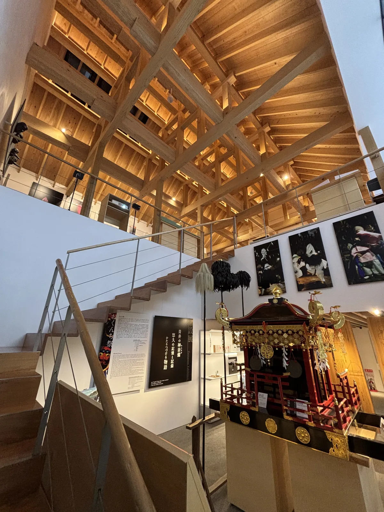
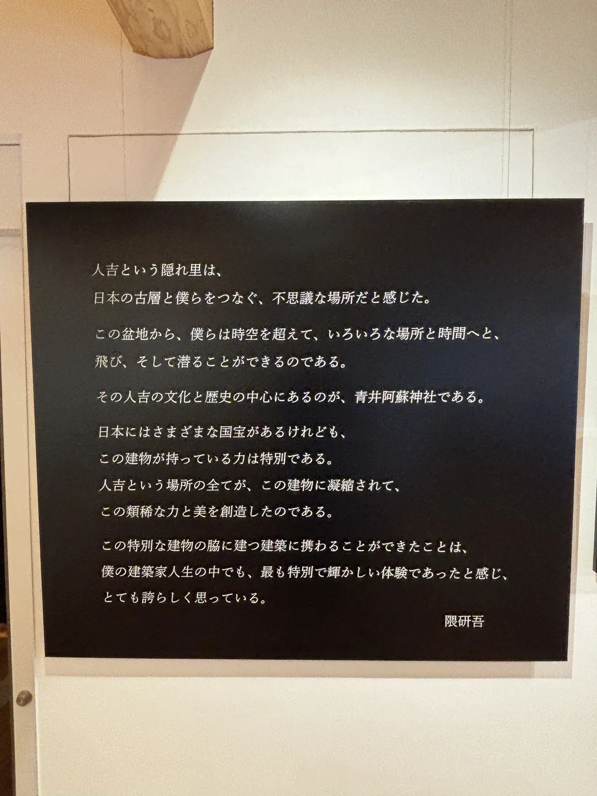
與紀念館隔著一道寬保三年（1743）建造的「むすび回廊」的，是文化苑—— 舊大宮司青井家的宅邸。這片地在大正十年前後離開神社之手， 經過約九十年，於平成二十二年（2010）四月重新併回，同年秋天以文化苑之名開苑， 主屋改稱繼承殿，三座土藏裡收著神佛習合的遺品、五色龍神像、獅子面與神轎。
那些建築本身也是史料。明治十年（1877）的西南戰爭裡，繼承殿成了薩軍人吉隊的宿舍， 茶室西北角的柱子上還留著當時砍出來的刀傷；同一年，參加那場戰爭的人吉二番隊 也在這座神社行了戰勝祈願。 紀念館趕在水患三年後落成，文化苑卻在同一場水患裡受災閉苑，一關就是好幾年。
祭儀與授与品
例祭原訂於創祀之日九月九日，明治改曆後固定為10月8日， 連同9日的神幸式，統稱おくんち祭，從10月3日一路延續到11日。 3日先舉行鎮火祭——這一帶入秋常颳一種叫「くんち風」的突風， 祭期用火機會增加，鎮火祭正是為了祈求祭典期間不生火災。
5日的獅子奉仕者抽選式決定神幸式的獅子人選，8頭獅子需要24名奉仕者， 因信仰「奉仕於神幸式可免災厄」而應徵者眾，希望者甚至會在元旦一早就前來登記。 8日清晨先行寅之刻菊祓，以白菊祓清社殿與神幸式的道具， 10時半舉行全年最莊重的獻幣式。
入夜後，球磨神樂在拜殿內側的神樂殿演出約三小時， 昭和五十七年（1982）獲選為國選擇無形民俗文化財。 神樂在這裡的紀錄可以追得更早——文明四年（1472）， 相良為續為求雨而在此奉納神樂等祭儀。求雨與鎮火，這兩件事在祭事史裡反覆出現。
9日上午，發輦祭祈求神幸道中平安後，10時半神幸行列自神社出發， チリン旗（旗竿頂端繫劍與鈴、據信兼具祓邪與神靈依代雙重意義）走在最前， 獅子與神轎隨行，巡遶人吉市街，直到秋風裡返回神社。11日的報賽祭 向神明稟報祭典圓滿落幕，一連九天的祭事至此收束。
隊伍裡的獅子自成一格。青赤一對的獅子頭於寬永十八年（1641）奉納， 青獅子的背面刻著相良家累代家臣築地主水左衛門尉秀治雕造並奉納的經緯； 青井阿蘇神社的獅子一人戴一頭，身著雷雲紋上衣、波浪紋袴，足袋配草鞋。 元祿六年（1693）還留下一張以線條記錄神樂殿獅子舞法的圖面。
晨間路線之擬定及其限制
青井阿蘇神社所在的上青井町，方圓一公里內疊著這座城市幾乎所有的歷史層次。 人吉市官方發行的《人吉おでかけまちなかマップ》剛好以神社周邊為範圍， 北朝上、附200公尺比例尺，把這一帶的節點都畫進同一張圖裡，可以直接沿用。
參拜完樓門與拜殿，繞進國寶紀念館看過展示，往西北步行約300公尺、 四分鐘，就到JR人吉驛——若時間抓得準，還能看到からくり時計裡 十七尊人偶演完一段三分鐘的城下巡遊故事。驛的西南側是鍛冶屋町通り， 藩政時代最多曾有六十六軒鍛冶職人聚集於此，如今僅存兩軒， 沿街還有味噌醬油藏與體驗南蠻紙牌「ウンスンカルタ」的店家。
沿胸川往東南續行約1.3公里、十五到二十分鐘，抵達相良家七百年居城 人吉城跡——別名繊月城，北倚球磨川、西臨胸川、東南為山地環繞， 曾是易守難攻的天然要塞，文久二年（1862）的一場大火燒盡大半城下町， 如今只剩石垣與水之手門臨江而立。時間充裕的話，可以再往南走到 願成寺與相良三十三觀音第一番清水觀音堂，本堂後方就是相良家歷代墓地。
回程沿球磨川岸邊折返，路上會再經過那根掛著水位標示牌的電柱—— 這條晨間路線走的不只是社殿與城跡，也是這座城市與河流之間， 反覆拉鋸又反覆和解的一段記憶。
建議走法（早上出發，約1.5〜2小時）
- 青井阿蘇神社參拜——樓門、拜殿、廊、青井の杜國寶紀念館
- JR人吉驛（からくり時計）
- 鍛冶屋町通り
- 人吉城跡（相良神社、二之丸・三之丸、水之手門）
5.（視體力）願成寺・清水觀音堂
- 沿球磨川岸邊折返神社
路況：全程市街地道路與緩坡，人吉城跡內有石段，沒有明顯高低差風險；
人吉城跡與神社境內的文化苑都在令和二年七月豪雨中受災， 出發前宜先確認各處的最新開放範圍。
季節：蓮池的蓮花見頃在6月到7月中旬，與おくんち祭的十月分屬兩頭。
交通：JR九州肥薩線・くま川鐵道人吉驛為起訖點，與神社之間徒步4分即達。
接下來往哪走：往北方向是阿蘇本身——阿蘇神社，
分靈的來處，卻不是這座神社在制度上的上級。
地圖
人吉市役所發行的《人吉おでかけまちなかマップ》（2024年5月暫定版）， 北朝上、附200公尺比例尺，把青井阿蘇神社、JR人吉驛、からくり時計、鍛冶屋町通り、 人吉城跡、永國寺、相良三十三觀音等節點都畫進同一張圖裡，與本篇路線高度重疊。
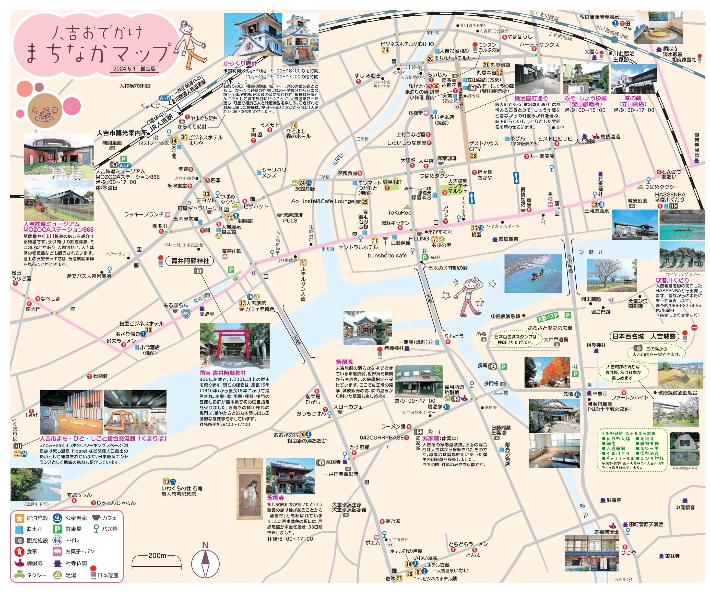
分享用短連結：https://os.housearch.net/s/8